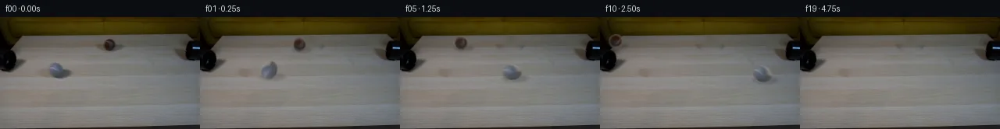
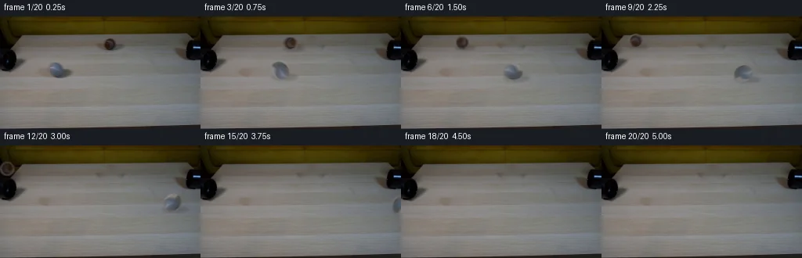
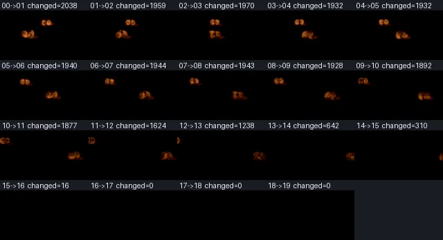

V0 · 初版即最终版
![]()
Observable Generation Trace
把最终像素视频、Harness 冻结的每轮候选、真实工具事件和 Agent 自述放在同一页。可观测证据与模型自述分开标记，避免把“模型说它检查过”误当成真实工具调用。
![首帧]()
Static locked-off single-shot with fixed frame throughout filmed with constant framerate in real-time. The scene shows a realistic scientific demonstration. The scene only contains the described setup and actions. The two black pipes are on opposite sides of the light-colored wooden table, but offset of each other. The brown and the grey tennis balls roll with high speed straight out of the two black pipes.
首帧显示在左侧播放器初始画面。Track 权限、隔离和 tensor 一致性来自 run manifest，而不是 METHOD.md。
上方并排显示初版和最终版，默认同步播放；下方每个版本可独立播放，也可勾选加入同步播放。仅检查图更新的连续重复快照已合并，回退旧视频仍保留为一次修订。
Observable events
来源：events.jsonl + run manifest
此 Track 禁止读取输出图片。逐轮预览由外部 Harness 自动冻结，只用于事后审计，生成 Agent 当时看不到这些页面。
Frozen candidates
每张图来自该 round 的真实 00 / 01 / 05 / 10 / 19 帧

pixels a90fc5469ae22be9 · code b556dd0d6ee94672
--- previous/generate.py +++ current/generate.py @@ -0,0 +1,246 @@ +#!/usr/bin/env python3 +"""Generate the 20-frame PixelWorld continuation for this case. + +The first input frame is retained exactly. Later frames use only local pixel +processing of that image plus deterministic 2-D compositing and motion math. +""" + +from pathlib import Path +import hashlib + +import cv2 +import numpy as np +from PIL import Image, ImageDraw, ImageFont, ImageFilter + +import artifact_io + + +ROOT = Path(__file__).resolve().parent +W, H = 256, 144 + + +def soft_ellipse(shape, cx, cy, rx, ry, feather=1.25): + """Return an antialiased ellipse coverage mask in [0, 1].""" + yy, xx = np.mgrid[: shape[0], : shape[1]] + d = np.sqrt(((xx - cx) / rx) ** 2 + ((yy - cy) / ry) ** 2) + return np.clip((1.0 + feather / min(rx, ry) - d) * min(rx, ry) / feather, 0, 1) + + +def reconstructed_table(first): + """Remove the two source balls/shadows while retaining horizontal grain.""" + masks = np.zeros((H, W), np.uint8) + # These masks include each contact shadow, not the nearby pipe geometry. + cv2.ellipse(masks, (141, 35), (15, 11), 0, 0, 360, 255, -1) + cv2.ellipse(masks, (76, 69), (19, 13), 0, 0, 360, 255, -1) + + telea = cv2.inpaint(first, masks, 5, cv2.INPAINT_TELEA) + + # A second estimate interpolates along the dominant horizontal wood grain. + # Mixing it with Telea suppresses circular inpaint patterns at this scale. + directional = first.astype(np.float32).copy() + for y in range(H): + xs = np.flatnonzero(masks[y]) + if not len(xs): + continue + x0, x1 = int(xs.min()), int(xs.max()) + left = first[y, max(0, x0 - 2)].astype(np.float32) + right = first[y, min(W - 1, x1 + 2)].astype(np.float32) + denom = max(1, x1 - x0 + 1) + for x in range(x0, x1 + 1): + u = (x - x0 + 0.5) / denom + directional[y, x] = left * (1 - u) + right * u + + fill = telea.astype(np.float32) * 0.45 + directional * 0.55 + # Feather the repaired region over two pixels while keeping every other + # scene pixel (especially both pipes) untouched. + blend = cv2.GaussianBlur(masks.astype(np.float32) / 255.0, (0, 0), 0.9) + blend = np.clip(blend[..., None], 0, 1) + out = first.astype(np.float32) * (1 - blend) + fill * blend + return np.clip(np.rint(out), 0, 255).astype(np.uint8), masks + + +def extract_sprite(first, cx, cy, rx, ry): + """Extract a compact source-derived ball sprite and matte.""" + pad = 3 + x0, x1 = int(cx - rx - pad), int(cx + rx + pad + 1) + y0, y1 = int(cy - ry - pad), int(cy + ry + pad + 1) + rgb = first[y0:y1, x0:x1].copy() + alpha = soft_ellipse(rgb.shape[:2], cx - x0, cy - y0, rx, ry, 1.1) + return rgb, alpha.astype(np.float32) + + +def rotated_sprite(rgb, alpha, angle): + """Rotate material detail; apply a small fixed-camera relighting term.""" + h, w = alpha.shape + center = ((w - 1) / 2, (h - 1) / 2) + mat = cv2.getRotationMatrix2D(center, angle, 1.0) + rr = cv2.warpAffine( + rgb, mat, (w, h), flags=cv2.INTER_CUBIC, + borderMode=cv2.BORDER_REFLECT_101, + ).astype(np.float32) + aa = cv2.warpAffine( + alpha, mat, (w, h), flags=cv2.INTER_LINEAR, + borderMode=cv2.BORDER_CONSTANT, borderValue=0, + ) + + yy, xx = np.mgrid[:h, :w] + nx = (xx - center[0]) / max(1, w / 2) … diff truncated; 159 more lines …
Final visual checks
Harness 保存的最终产物


Agent claims
以下文字由生成 Agent 撰写，不等同于工具证据
first_frame.png.| Frame | Brown center / event | Grey center / event |
|---|---|---|
| 00 | (140,35), source image | (74,68), source image |
| 01 | ~127,34 | ~88,69 |
| 02 | ~114,34 | ~101,69 |
| 03 | ~102,33 | ~115,70 |
| 04 | ~89,33 | ~128,70 |
| 05 | ~77,32 | ~142,71 |
| 06 | ~65,32 | ~155,71 |
| 07 | ~53,31 | ~168,72 |
| 08 | ~41,31 | ~181,72 |
| 09 | ~29,30 | ~194,73 |
| 10 | ~17,30, nearing edge/pipe | ~207,73 |
| 11 | ~5,29, partly out | ~220,74 |
| 12 | fully out of frame | ~233,74 |
| 13 | absent | ~246,75, partly out |
| 14 | absent | ~258,75, almost out |
| 15 | absent | fully out of frame |
| 16 | absent | absent |
| 17 | absent | absent |
| 18 | absent | absent |
| 19 | absent; static scene | absent; static scene |
The ending intentionally holds the empty apparatus for roughly one second, making both completed exits legible within the five-second shot.
This continuation is generated deterministically from first_frame.png; no external imagery, model, engine, or reference material is used.
artifact_io.save writes the packed uint32 tensor, PNG sequence, inspection sheet, and standalone player. A separate transition sheet visualizes amplified adjacent-frame pixel differences. The generator then reloads every PNG and pixels.npz, reconstructs RGB values, and asserts exact agreement.inspection.png and transition_check.png are generated diagnostics. They were not examined with an image viewing tool; subsequent revision checks were performed through local numeric measurements only, as required.